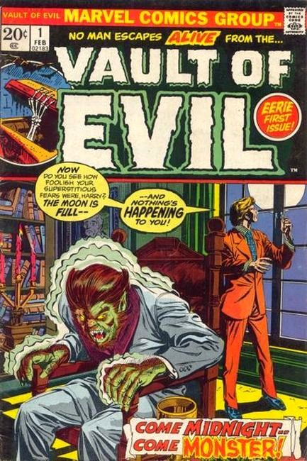
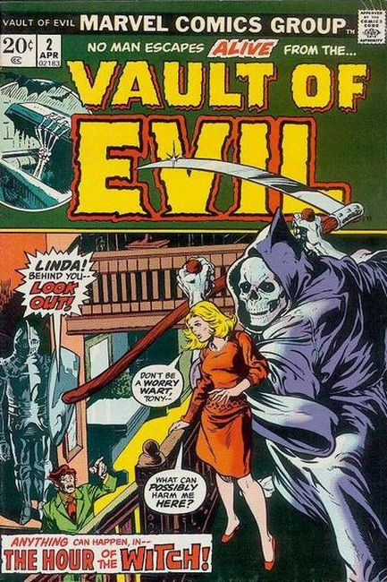
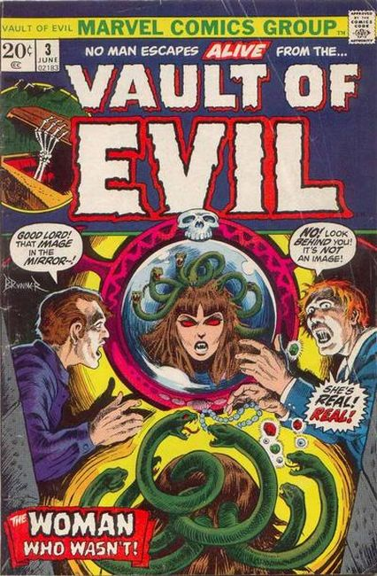
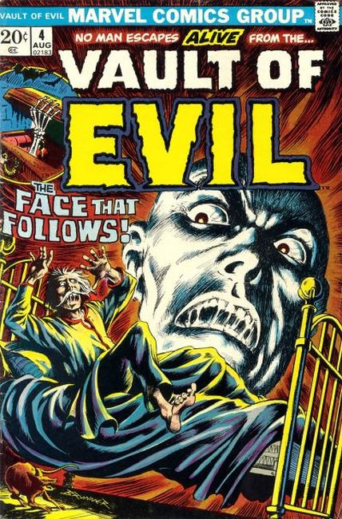
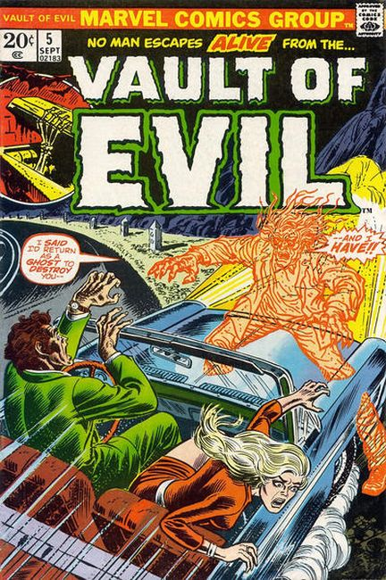
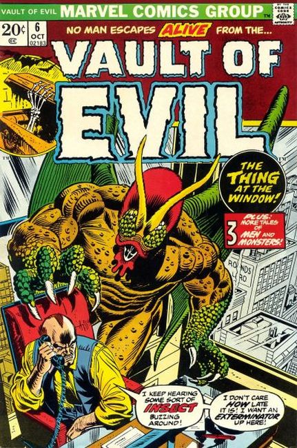
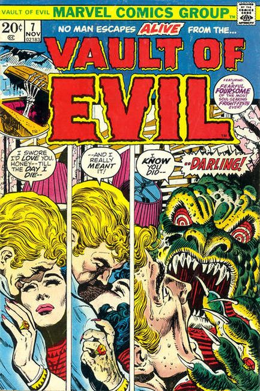
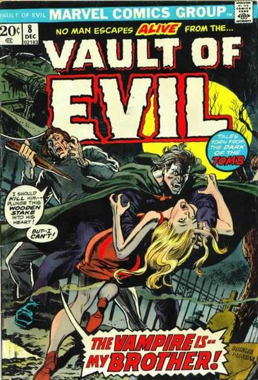
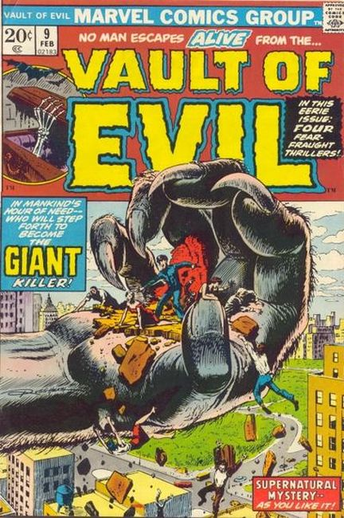
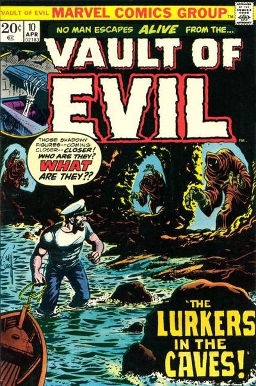

Series: 23 issues 1973
Cover by Gil Kane and Tom Palmer
Publisher: Marvel
×









❮
❯
Horror anthology reprint series.
Issue #1:
- The Thing that Grew! Professor Borglum creates a new life when his blood is accidentally mixed with an experiment. When it continues to grow and kill people for their blood he tries to find a way to kill it.
- The Withered Hand, art by Paul Reinman.
- While in Tibet John Clay steals a priceless ruby that a monk tells him contains a sinner's soul. House ad for Fear (Marvel, 1970 series) #12 (February 1973), featuring Man-Thing art.
- The Man in the Box!, script, pencils by Bill Benulis, inks by Jack Abel.
- The story of a little (roughly inch tall) man who lives in a little green box and comes out every night to do a good deed.
- Poor Mister Watkins, script by Stan Lee, art by Werner Roth. Henry Higgins is an obnoxious man who enjoys being mean to others and harasses a young lady at the library.